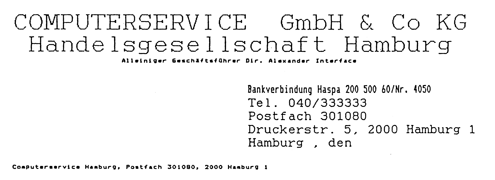

Druckeranpassung für Wordstar 3.0, dBase II und Multiplan
Am Beispiel von Wordstar 3.0 und dem Drucker NL-10 von Star wird hier gezeigt, wie einfach man die Möglichkeiten eines guten Textverarbeitungssystems nutzen und auf die individuellen Bedürfnisse anpassen kann.
Durch die folgende Druckeranpassung an Wordstar 3.0 sind Sie in der Lage, sowohl die speziellen Fähigkeiten Ihres Druckers auszunutzen, als auch die gewonnenen Kenntnisse auf die Programme dBase II und Multiplan C 128 zu übertragen, um so in allen drei Programmsystemen Ihren Drucker optimal verwenden zu können.
Druckeranpassung für Wordstar 3.0
Das Bedienungsfeld des NL-10 (control panel) bietet fantastische Möglichkeiten der Druckbildgestaltung. Wenn man aber schon über ein so ausgereiftes Textverarbeitungsprogramm wie Wordstar 3.0 verfügt, möchte man natürlich auch alle Möglichkeiten des Druckers durch Steuerbefehle nutzen können. Wer möchte nicht gerne durch sein Textverarbeitungsprogramm den Drucker veranlassen, zum Beispiel Schönschrift, Proportionalschrift, Breitschrift, Engschrift, Kursivschrift, Doppeldruck, Fettdruck oder gar zwei- oder vierfache Schrifthöhe wie von Geisterhand zu wechseln?
Ein Kopfbogenentwurf wie in Bild 1 dürfte doch sicher auch den anspruchsvollen Benutzer begeistern.

Wordstar bietet zwar einiges; die Möglichkeiten, zusätzliche Steuerzeichen an den Drucker zu geben, sind aber doch begrenzt. Mit gewissen Tricks und Änderungen über das Installationsprogramm läßt sich aber viel erreichen. In einer einfach gehaltenen Anleitung sollen diese Änderungen und Anpassungsarbeiten nachfolgend beschrieben werden. Sie beziehen sich auf den parallel am Userport angeschlossenen NL-10, da Wordstar 3.0 nur auf Druckern mit einer Centronics-Schnittstelle optimal anzupassen ist. Eine DIN-Belegung einer solchen Verbindung zwischen C 128 und dem Drucker können Sie Bild 2 entnehmen.
Anpassung
Die einzelnen Steuerzeichen für den Drucker sind auf der Wordstar-3.0-Systemdiskette in der Datei »WS.COM« vorhanden. Zusätzliche oder neue Steuerzeichen können in diese Datei eingebaut werden. Hierzu benötigen wir das ebenfalls auf der Wordstar-3.0-Diskette vorhandene Installationsprogramm »INSTALL.COM« und die dazugehörigen Daten »WS.INS«.
PIN-Belegung:
USERPORT-CENTRONICS │19
1 ── A ───────────── GND ───────────── 16 ── 33 ─┤ I
B ────────── FLAG-BUSY ────────── 10 │30
C ───────────── DO ────────────── 2
D ───────────── D1 ────────────── 3
E ───────────── D2 ────────────── 4
F ───────────── D3 ────────────── 5
H ───────────── D4 ────────────── 6
J ───────────── D5 ────────────── 7
K ───────────── D6 ────────────── 8
L ───────────── D7 ────────────── 9
M ───────── PA2-STROBE ────────── 1
12 ── NVerdrahtungsschema der Centronics-Schnittstelle am Userport (Stecker für Userport: TRW 251-12-50-170; für Drucker: 36poliger Amphenol-Stecker; Kabel: Flach- oder Rundkabel bis 1,5 m)
Um andere Dateien nicht zu schädigen, formatieren wir eine neue Diskette und kopieren unter CP/M 3.0 mit dem Kopierprogramm »PIP.COM« von den Wordstar-Systemdisketten die drei Dateien:
| INSTALL.COM | (Diskette 2) |
| WS.COM | (Diskette 1) |
| WS.INS | (Diskette 2) |
Dies erreichen Sie bei einem Laufwerk durch »e:=a: Programmname. Kennung«, bei zwei Laufwerken durch »Ziellaufwerk := Quellaufwerk: Programmname. Kennung«. Legen Sie ins Ziellaufwerk die leere (aber formatierte) Diskette und in das Quellaufwerk die Wordstar-3.0-Diskette ein. Wenn Sie alle Risiken beim Kopieren ausschalten möchten, müssen Sie dem zuvor genannten noch »[ov]« anhängen. Die eckigen Klammern schließen die sogenannte Option ein, »o« bewirkt in jedem Fall ein Kopieren bis zum Ende der Datei (File – Ende – Markierungen werden überlesen), »v« führt einen Verify durch, das heißt die Daten werden nochmals überprüft.
Mit der so erstellten Diskette wollen wir jetzt die Neuinstallation durchführen. Wir starten mit dem Befehl: INSTALL <RETURN>.
Es erscheint jetzt auf dem Bildschirm eine Titel- und Copyright-Meldung, die mit dem Satz »Type any key to continue...« endet. Ein beliebiger Tastendruck führt uns also weiter. Die nächste Bildschirmmeldung zeigt uns, wozu INSTALL benötigt wird. Diese Anzeige verlassen wir wieder mit <RETURN>. Nun werden wir gefragt, welches Programm wir ändern wollen. Wir geben »WS« für Wordstar ein und gehen mit <RETURN> weiter. In der nächsten Bildschirmanzeige werden wir einige Benutzerhinweise finden, die wir aber im Augenblick nicht brauchen, also gehen wir mit einem beliebigen Tastendruck weiter.
Installationsvorarbeiten
Nun wird die Eingabe des Laufwerkes, in dem sich die Diskette mit der Datei WS.COM befindet, erwartet. Diese Anzeige verlassen wir mit <RETURN>, wenn nur das eingebaute Laufwerk benutzt wird. Verwenden Sie jedoch zwei Laufwerke, so geben Sie entsprechend »a:« oder »b:«, gefolgt von <RETURN>, ein.
Nun stellt sich die Frage, wie das zu installierende Programm bezeichnet werden soll. Da wir die bereits grundinstallierte Datei WS.COM nur ändern wollen, geben wir hier ein: WS.COM <RETURN>. Sie brauchen sich an dieser Stelle keine Sorgen zu machen, daß Ihre Installationsdatei überschrieben wird, da die Änderungen nur auf der Kopie der Originaldiskette durchgeführt werden. Es besteht also jederzeit die Möglichkeit, auf die Originaldatei zuzugreifen.
Wir erhalten jetzt die Meldung, daß die Datei WS.COM zur Grundlage genommen wird. Gleichzeitig wird vorgeschlagen, die neue Datei wieder WS.COM zu nennen. Diesem Vorschlag folgen wir durch Eingabe von <RETURN>.
Als nächstes werden wir durch die Bildschirmanzeige darauf hingewiesen, daß WS.COM auf der im Laufwerk befindlichen Diskette bereits existiert und – wenn wir fortfahren überschrieben wird. Da wir ja eine neue WS.COM-Datei erzeugen wollen, sind wir einverstanden und drücken <RETURN>. Die folgende Anzeige ist eine Sicherheitsabfrage, die wir wieder mit <RETURN> bestätigen. Nach dem Hinweis, daß WS.COM kopiert wird, erscheint das Hauptmenü mit den Menüpunkten A – E und X. Da wir eine eigene Druckeranpassung vornehmen wollen, wählen wir <D> (Custom Installation of Printers). Wir erhalten nun einige Erläuterungen zum Druckerinstallationsmenü und verlassen es mit einer beliebigen Taste. Jetzt erscheint auf unserem Bildschirm das Druckerinstallationsmenü mit den Unterpunkten A – Q und X, das man, gemäß Bild 3 übersetzen kann.
★ ★ ★ INSTALLATIONSMENÜ FÜR DRUCKER ★ ★ ★
A Automatische Installation für Spezialdrucker
B Automatische Installation für Standarddrucker
Alle Drucker Nur Spezialdrucker
C Name des Druckers I Farbbandauswahl
D Initialisierung J Vertikale Bewegung
(des Papiers)
E Überdrucken K Horizontale Bewegung
(des Druckkopfes)
F Fettdruck L Druckmodi
G Protokollauswahl M Phantomzeichen
H Treiberauswahl
Nur Standdardrucker Optionen
N Wagenrücklauf/Zeilenvorschub O Benutzereigene Funktionen
X Zurück zum P Papiertransport
Installationsmenü Q Zeichenbreite
Drücken Sie den Buchstaben Ihrer Wahl (A - Q/X)
Für die Verbesserung der Anpassung von Wordstar 3.0 an den Star NL-10 benötigen wir nur einige Menüpunkte, da die meisten keiner Veränderung bedürfen. Normalerweise können nur benutzereigene Funktionen unter dem Punkt <O> eingegeben werden. Hier gibt es vier Möglichkeiten: Control (jetzt im weiteren Text das Zeichen ^) PQ, ^PW, ^PE und ^PR. Diese vier Möglichkeiten sind zu wenig. Wir suchen daher noch nach weiteren und werden beim Menüpunkt <I> fündig. Unser Drucker besitzt nur ein Farbband, eine Umschaltungsmöglichkeit wird also nicht benötigt, so daß wir die Funktion ^PY anderweitig einsetzen können. ^PY hat zwei Funktionen, das erste ^PY schaltet einen Vorgang ein, das zweite ^PY schaltet wieder zurück.
Die Drucksteuerbefehle ^PA und ^PN, die wir unter dem Menüpunkt <Q> finden, dienen normalerweise der Steuerung der Zeichenbreite. Nach meiner Auffassung können wir diese Funktion besser nutzen, wir werden hier also eine Änderung vornehmen. Unter der Menüziffer <P> finden wir noch die Drucksteuerbefehle ^PT (Hochstellen) und ^PV (Tiefstellen). Wir werden diese Befehle für die Druckermöglichkeiten Sub- und Superscript nutzen.
Fangen wir also mit der Neuinstallation bei den Sequenzen für Farbbandauswahl an. Nach dem Installationsmenü für Drucker wählen wir den Buchstaben <I>. Kurz darauf werden wir gefragt, welche Sequenz beim ersten ^PY zum Drucker geschickt werden soll. Die nächste Zeile zeigt an, ob hier bereits Steuersequenzen installiert sind, wenn ja, welche, oder ob noch gar keine Steuerbefehle vorliegen (empty = leer). Im letzten Satz der Bildschirmanzeige werden wir angewiesen, bei beabsichtigten Änderungn die Taste <C> zu drücken. Wenn wir keine Änderungen wünschen, wäre mit <RETURN> weiterzugehen.
Da wir für das erste PY eine neue Sequenz wollen, müssen wir also <C> drücken. Es erscheint ein Bildschirm voller englischer Anweisungen, die wir aber bis auf den letzten Satz nicht weiter beachten brauchen. Der letzte Satz sagt uns, wieviel Eingaben möglich sind. Im vorliegenden Falle wird eine »4« angezeigt. Ganz unten sehen wir nebeneinander zwei Anzeigen:
| links: »Current value« | = gegenwärtiger Wert |
| rechts daneben: »New value« | = neuer Wert. |
Mit dem ersten ^PY wollen wir von der normalen Schriftbreite (80 Zeichen je Zeile) auf Engschrift (136 Zeichen je Zeile) umschalten. Die Eingabe der Steuersequenzen muß bei unserer Installationsversion hexadezimal erfolgen. Alle im folgenden benutzten Sequenzen finden wir im »Parallel-Steckmodul-Handbuch, Anhang D« zum Star NL-10. Aus dem Druckerhandbuch ergibt sich für Engschrift die Sequenz 1B (erster Wert) und OF (zweiter Wert). Da vier Eingabemöglichkeiten zur Verfügung stehen, setzen wir für die erste Möglichkeit 00 (jeweils weiter mit <RETURN>), für die zweite ebenfalls 00, für die dritte 1B und für die vierte 0F. Nach dem letzten <RETURN> erhalten wir die Meldung, daß die neu eingegebene Steuersequenz jetzt lautet: 0h 0h 1Bh Fh. Wir sehen, daß von unserer Eingabe die erste 0 weggefallen ist, hinter jeden Wert wurde automatisch ein h für »hexadezimal« gestellt. Für unsere weitere Installation ist das »h« aber ohne Bedeutung. Falls wir jetzt feststellen, daß wir uns vertan haben, gehen wir mit Tastendruck <N> an den Anfang der Installation für das erste ^PY zurück. Entspricht die neue Sequenz aber unserer Eingabe, beantworten wir die folgende Sicherheitsabfrage mit <RETURN>. Damit ist die Eingabe abgeschlossen und das Installationsprogramm fragt jetzt, welche Steuersequenz das zweite ^PY auslösen soll.
Definition der Steuersequenzen
Ein Zurücksetzen der Engschrift zum normalen Zeichenabstand wird durch hexadezimal 12 ausgelöst. Wir arbeiten uns jetzt wieder genau wie beim ersten ^PY durch das Menü und geben als Wert 00 00 1B 12 ein. Mit dem nächsten <RETURN> ist die Installation des Druckermenüpunktes <I> abgeschlossen, auf dem Bildschirm erscheint wieder das Installationsmenü für Drucker. Wenden wir uns jetzt den Steuerbefehlen ^PA und ^PN zu, die wir im Druckerinstallationsmenü unter dem Menüpunkt <Q> finden. Mit diesen beiden Wordstar-3.0-Befehlen wollen wir softwaremäßig die NLQ-Schrift ein- beziehungsweise ausschalten. Drücken wir also die Taste <Q> und verfahren wie beim ersten ^PY beschrieben. Die Steuersequenz, die wir für »NLQ-Schrift ein« auf ^PA installieren wollen, lautet 00 1B 78 01, auf ^PN installieren wir »NLQ-Schrift aus« mit 00 1B 78 00.
Es übt sich und wird sicher immer einfacher. Wir gehen also jetzt weiter zu Menüpunkt P, um hier die Befehle ^PT und ^PV mit neuen Steuersequenzen zu belegen.
Die bisherigen Wordstar-3.0-Befehle ^PT und ^PV (Hoch- und Tiefstellen) funktionieren mit Standard-Matrixdruckern nur, wenn mit doppeltem Zeilenabstand geschrieben wird. Das will man normalerweise aber nicht. Bei einfachem Zeilenabstand wird der Befehl ignoriert. Da der NL-10 viele Möglichkeiten hat, lassen wir uns hier etwas einfallen. Wir verwenden Superscript und Subscript für Hoch- beziehungsweise Tiefstellen. Superscript hat als Steuersequenz 00 1B 53 00, Subscript hat die Sequenz 00 1B 53 01.
Nach Drücken des Menüpunktes <P> verfahren wir auch hier nach dem uns schon bekannten System. Mit diesen beiden neu installierten Sequenzen können wir aber nur Super- oder Subscript einschalten. Das genügt uns aber nicht, wir müssen danach ja wieder ausschalten können. Das tun wir mit dem Befehl ^PET. Dieser Befehl wird weiter unten noch erläutert werden. Wenn wir zum Beispiel die Angabe »m2« schreiben wollen, so müssen wir folgende Zeichen eingeben: m^PT2^PET. Ähnlich wäre bei Tiefstellen mit Subscript zu verfahren. Beim Ausdruck unter NLQ werden die hoch- beziehungsweise tiefgestellten Zeichen allerdings in Normalschrift gedruckt.
Nun kommen wir zu den eigentlichen »Benutzereigenen Funktionen«, die wir unter dem Menüpunkt <O> installieren können. Hier gibt es vier Befehle, die auch in der nachstehenden Reihenfolge zu installieren sind: ^PQ, ^PW, ^PE und ^PR. Welche zusätzlichen Funktionen unseres Druckers möchten wir hier verwenden? Vorschlag: Sequenzen für doppelte und vierfache Schrifthöhe (speziell auf dem NL-10), für die mit der Funktion »Wiederausschalten« schon drei Befehle benötigt werden und schließlich eine »Universalsequenz«, auf die weiter unten noch näher eingegangen wird.
Die Steuersequenzen für den Installationsdurchgang <O> (Benutzereigene Funktionen), deren Installation nacheinander automatisch auf dem Bildschirm in der folgenden Reihenfolge aufgerufen wird, lauten:
| für ^PQ | 00 1B 68 1 | Doppelte Schrifthöhe |
| für ^PW | 00 1B 68 2 | Vierfache Schrifthöhe |
| für ^PE | 00 00 00 1B | »Universalsequenz« |
| für ^PR | 00 1B 68 0 | von 2- beziehungsweise 4-facher Schrifthöhe zurück auf Normalschrift |
Wir beenden die Installation dieses Menüpunktes wie unter ^PY beschrieben und »landen« wieder im Druckermenü. Die Installation könnte jetzt abgeschlossen werden, unser »Kind« sollte aber einen Namen bekommen. Beim Laden von Wordstar erscheint auf dem Bildschirm kurzfristig ein Eröffnungsbild, das für den Drucker normalerweise die Bezeichnung »Standarddrucker« enthält. Unter dem Menüpunkt <C> (Name des Druckers) kann für die Neuinstallation ein Name eventuell mit einer Installationsnummer wie zum Beispiel »Drucker Star NL-10, Inst. 1.0« eingegeben werden. Weitere zusätzliche Installationen können dann später mit 1.1, 1.2 und so weiter bezeichnet werden. Mit <C> rufen wir also den Installationspunkt »Name des Druckers« auf. Da wir eine Änderung wünschen, betätigen wir nochmals <C>. Jetzt können wir einen neuen Druckernamen eingeben. Die maximale Zeichenzahl für den Namen darf 34 Zeichen betragen. Damit der neue Name später im Eröffnungsbild zentriert erscheint, zählt man die Zeichenzahl des neuen Namens ab. Bei dem obigen Vorschlag ergeben sich 29 Zeichen inklusive der Leertasten, so daß wir vor dem Namen zwei Leerschritte eingeben. Nach abgeschlossener Eingabe und zweimaligem <RETURN> ist auch der neue Name installiert.
Damit wollen wir die Gesamtinstallation beenden. Mit Tastendruck <X> verlassen wir das Installationsmenü für Drucker, mit einem weiteren <X> verlassen wir auch das Hauptmenü. Aus dem jetzt erscheinenden Menü wählen wir <A>. Damit wird der gesamte Installationsvorgang abgeschlossen, die neue Datei WS.COM mit allen Änderungen wird gespeichert, schließlich kehrt der C 128 zum CP/M-Prompt >A zurück.
Mit PIP kopieren wir die neu installierte Datei WS.COM auf die Wordstar-3.0-Arbeitsdiskette, wobei die alte Datei WS.COM überschrieben wird. (Achtung: Keinesfalls auf die Original-Wordstar-Diskette kopieren!)
Wenn jetzt Wordstar geladen wird, sollte ein Eröffnungsbild wie in Bild 4 erscheinen, jedoch mit Ihrem zuvor festgelegten Druckernamen und gegebenenfalls einer Versionsnummer.
MicroPro WordStar release 3.00 - 2.0 serial WS PC 128 M&T
Copyright (C) 1981 MicroPro International Corporation
Commodore 128 Personal Computer
Drucker Star NL-10, Inst. 1.0
No Communications protocol
Primary list device
Es zeigt uns, daß wir jetzt mit der neuen Version WS.COM arbeiten und die neuen Befehle der Tabelle 1 anwenden können.
| Bezeichnung | Eingabe | Bildschirmdarstellung |
|---|---|---|
| Schönschreibschrift (NLQ) ein | ^PA | ↑A |
| Schönschreibschrift (NLQ) aus | ^PN | ↑N |
| Superscript <hochgestellt> ein | ^PT | ↑T |
| Subscript <tiefgestellt> ein | ^PV | ↑V |
| Super-/Subscipt aus <siehe auch weiter unten> | ^PET | ↑ET |
| Kleinschrift <17 Zeichen/inch> ein | (erstes) ^PY | ↑Y |
| Kleinschrift <17 Zeichen/inch> aus | (zweites) ^PY | ↑Y |
| Doppelte Schrifthöhe | ^PQ | ↑Q |
| Vierfache Schrifthöhe | ^PW | ↑W |
| Doppelte oder vierfache Schrifthöhe aus (zurück zur vorherigen Schrifthöhe) | ^PR | ↑R |
| Universalsequenz (zusammen mit ein oder zwei weiteren Steuerzeichen der jetzt folgenden weiteren Auflistung) | ^PE | ↑E |
| Kursivschrift (Italic) ein | ^PE4 | ↑E4 |
| Kursivschrift (Italic) aus | ^PE5 | ↑E5 |
| Elite (12 Zeichen/inch) ein | ^PEM | ↑EM |
| Pica (Normal, 10 Zeichen/inch) ein | ^PEP | ↑EP |
| Breitdruck ein | ^PEW1 | ↑EW1 |
| Breitdruck aus | ^PEW0 | ↑EW0 |
| Proportionalschrift ein | ^PEp1 | ↑Ep1 |
| Proportionalschrift aus | ^PEp0 | ↑Ep0 |
| Super- bzw. Subscript aus | ^PET | ↑ET |
| Zeilenabstand | ||
| 6 Zeilen/inch (normal) | ^PE2 | ↑E2 |
| 8 Zeilen/inch | ^PE0 | ↑E0 |
| 10 Zeilen/inch | ^PE1 | ↑E1 |
| n Zeilen/inch (siehe auch Erklärung im Text) | ^PE3n | ↑E3n |
| Einmaliger Rücktransport des Papiers um n/216tel inch Berechnung zu n siehe Text | ^PEjn | ↑Ejn |
| Beispiel: Einmaliger Rücktransport des Papiers um 1 Zeile | ^PEj$ | ↑Ej$ |
Die »Universalsequenz«
Unter ^PE haben wir die Steuersequenz 00 00 00 1B installiert. 1B ist die hexadezimale Darstellung der sogenannten Escapesequenz <ESC> (in Basic CHR$ (27)). Mit ihr beginnen eine ganze Reihe von Steuercodes, mit denen wir unseren NL-10 unter Wordstar veranlassen können, viele Dinge zu tun, die uns sonst mit diesem Textprogramm und einem Matrixdrucker nicht möglich wären. Zum Beispiel kann man mit Wordstar 3.0 und einem Standarddrucker normalerweise nur ein-, zweizeilig bis neunzeilig drucken (^OS 1-9). Punktbefehle wie zum Beispiel .LH funktionieren nur mit Typenraddruckern. Mit unserer »Universalsequenz« allerdings eröffnet sich fast eine Wunderwelt an neuen Möglichkeiten. Zum Beispiel gibt es einen Steuercode, der den Zeilenabstand des NL-10 in n/216-inch-Schritten bewirkt. Der Code lautet nach dem Handbuch CHR$ (27); "3"; n. Der Standardzeilenabstand unter Wordstar 3.0 beträgt bei einzeiliger Schreibweise 6 Zeilen / inch, 36/212 inch wäre also einzeilig. 11/2zeilige Schreibweise läßt sich hieraus rechnerisch unschwer ableiten: (1-zeilig = 36, 1/2-zeilig = 18, 1 1/2-zeilig = 36 + 18 = 54). Nochmals zurück zu unserem Code <ESC> "3" n. Für n muß man einsetzen, wieviele 216zehntel inch der Zeilenabstand betragen soll. Normalerweise müßte der Code für 11/2-zeilige Schreibweise lauten: <ESC> "3" 54. Da in diesen Steuercodes allerdings keine Dezimalzahlen, sondern nur ASCII-Codes stehen dürfen ("3" ist bereits das ASCII-Zeichen der Dezimalzahl 51), müssen wir noch das ASCII-Zeichen für die Dezimalzahl 54 suchen. Wir finden es in der Liste »ASCII-Codes und Vergleichsliste, Anhang B« des Steckmodul-Handbuches zum NL-10 oder jeder anderen ASCII-Vergleichsliste wie folgt: dezimal 54 = ASCII "6". Der richtige Code lautet also <ESC>;"3";"6". Unter Wordstar geben wir ^PE36 ein, da der Befehl für <ESC> von uns auf ^PE installiert wurde. Auf unserem Bildschirm erscheint ^E36. Bis zu einer weiteren Änderung wird unser Drucker jetzt 11/2-zeilig drucken. So läßt sich jede gewünschte Zwischengröße für die Zeilenabstände errechnen und verwirklichen.
Das alles liest sich viel komplizierter, als es in Wirklichkeit ist. Ein wenig Probieren und Nachdenken und die neue Drucker-Befehlsübersicht (Tabelle 1) machen diesen Vorgang völlig einfach. Fast alle Eigenschaften des NL-10, die sich nicht mit normalen Wordstar-3.0-Befehlen oder Punktbefehlen ansteuern lassen, sind mit unserer neuen »Universalsequenz« aktivierbar.
Der Einsatz der Neuinstallation
Der Einsatz kann natürlich nicht im vollen Umfang dargestellt werden, hier muß der Anwender probieren. Auf einige Besonderheiten sollte dennoch hingewiesen werden.
Wer hätte nicht gern die Möglichkeit, Artikel oder Abschnitte von Artikeln mit einem Großbuchstaben zu beginnen? (siehe beispielsweise die Artikel in der »64'er«). Hierzu muß man ein wenig nachdenken.
Der Einsatz der Neuinstallation
Normalerweise schreibt der Drucker nach Ausdruck eines Buchstabens mit doppelter oder vierfacher Höhe nach Zurückschalten auf Normalschrift etwas unterhalb der unteren Zeile, also sozusagen am Fuß des Großbuchstabens, weiter. Will man in die »Kopfzeile«, ist dies ohne weiteres mit der »Universalsequenz«^PE möglich. Probieren Sie doch einfach einmal die folgende Zeichenkette am Beginn der nächsten Zeile:
^PWN^PR^PEjLUN
Als Ergebnis müßte der NL-10 »Nun« mit großem »N« ausgeben.
Nun können wir in der Kopfzeile weiterschreiben. Natürlich müssen wir jetzt in den folgenden zwei Zeilen am linken Rand jeweils vier Leerzeichen einfügen, da wir sonst den Großbuchstaben überschreiben. Der Rückschritt in die obere Zeile wurde durch die Sequenz ^PEjL (Rückschritt um 76/216 inch, also etwas mehr als 2 Zeilen) bewirkt.
Natürlich muß man bei der späteren Verwendung der doppelten oder vierfachen Schrifthöhe mit Wordstar 3.0 »jonglieren«. Die Buchstaben werden trotz ihrer mehrfachen Breite und Höhe in der Statuszeile sowohl bei der Spalten- als auch bei der Seitenzahl einfach gezählt. Bei der Wordstar-3.0-Standardeinstellung mit 65 Zeichen/Zeile ist also die spätere Druckzeile bereits bei 32 doppeltbreiten beziehungsweise 16 vierfachbreiten Zeichen bis an den rechten Rand gefüllt. Eine Bildschirmdarstellung ist also, wie auch bei fast allen anderen Wordstar-3.0-Befehlen, nicht gegeben. Wenn man doppelte oder vierfache Zeichenhöhe über mehrere Zeilen schreiben möchte, sollte man nach jeder Schriftzeile sofort nach dem letzten Zeichen mit ^PR zurücksetzen und gegebenenfalls die neue Zeile wieder mit ^PQ oder ^PW beginnen, sonst multipliziert der NL-10 den links gesetzten Druckrand mit 2 oder 4 und beginnt dadurch die nächste Zeile nicht linksbündig, sondern irgendwo in der Mitte.
Was den großen Buchstaben recht ist, ist den kleinen billig. Mit ^PY^PT erhalten wir die kleinstmögliche Schrift auf unserem NL-10, die wir mit ^PY^PET beenden.
Auch die Italic-Breitschrift sieht hervorragend aus.
Sie wird mit dem Befehl ^PEW1^PE4....^PEWO^PE5 geschrieben.
Überhaupt ist eine Vielzahl von Kombinationen möglich, die man an dieser Stelle bei weitem nicht alle beschreiben kann. Probieren Sie doch ein wenig und Sie werden mit mir der Meinung sein, mit der Kombination
Commodore 128 PC – Star NL-10 – Wordstar 3.0
über ein vorzügliches und dennoch preiswertes Textverarbeitungssystem zu verfügen.